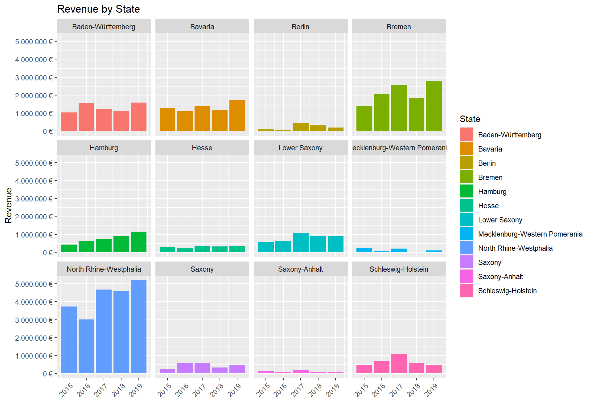

Journal (reproducible report)
Alexander Sowarka
2020-11-30
1 Intro to tidyverse Challenge
Last compiled: 2020-12-04
1.1 Given Code
Following given code chunks from the exercise are used:
# Data Science at TUHH ------------------------------------------------------
# SALES ANALYSIS ----
# 1.0 Load libraries ----
library(tidyverse)
library(readxl)
library(lubridate)
# 2.0 Importing Files ----
# A good convention is to use the file name and suffix it with tbl for the data structure tibble
bikes_tbl <- read_excel(path = "00_data/01_bike_sales/01_raw_data/bikes.xlsx")
orderlines_tbl <- read_excel("00_data/01_bike_sales/01_raw_data/orderlines.xlsx")
# Not necessary for this analysis, but for the sake of completeness
bikeshops_tbl <- read_excel("00_data/01_bike_sales/01_raw_data/bikeshops.xlsx")
# 3.0 Examining Data ----
# 4.0 Joining Data ----
bike_orderlines_joined_tbl <- orderlines_tbl %>%
left_join(bikes_tbl, by = c("product.id" = "bike.id")) %>%
left_join(bikeshops_tbl, by = c("customer.id" = "bikeshop.id"))
# Examine the results with glimpse()
bike_orderlines_joined_tbl %>% glimpse()## Rows: 15,644
## Columns: 19
## $ ...1 <chr> "1", "2", "3", "4", "5", "6", "7", "8", "9", "10", "...
## $ order.id <dbl> 1, 1, 2, 2, 3, 3, 3, 3, 3, 4, 5, 5, 5, 5, 6, 6, 6, 6...
## $ order.line <dbl> 1, 2, 1, 2, 1, 2, 3, 4, 5, 1, 1, 2, 3, 4, 1, 2, 3, 4...
## $ order.date <dttm> 2015-01-07, 2015-01-07, 2015-01-10, 2015-01-10, 201...
## $ customer.id <dbl> 2, 2, 10, 10, 6, 6, 6, 6, 6, 22, 8, 8, 8, 8, 16, 16,...
## $ product.id <dbl> 2681, 2411, 2629, 2137, 2367, 1973, 2422, 2655, 2247...
## $ quantity <dbl> 1, 1, 1, 1, 1, 1, 1, 1, 1, 1, 1, 2, 1, 1, 1, 1, 1, 1...
## $ model <chr> "Spectral CF 7 WMN", "Ultimate CF SLX Disc 8.0 ETAP"...
## $ model.year <dbl> 2021, 2020, 2021, 2019, 2020, 2020, 2020, 2021, 2020...
## $ frame.material <chr> "carbon", "carbon", "carbon", "carbon", "aluminium",...
## $ weight <dbl> 13.80, 7.44, 14.06, 8.80, 11.50, 8.80, 8.20, 8.85, 1...
## $ price <dbl> 3119, 5359, 2729, 1749, 1219, 1359, 2529, 1559, 3899...
## $ category <chr> "Mountain - Trail - Spectral", "Road - Race - Ultima...
## $ gender <chr> "female", "unisex", "unisex", "unisex", "unisex", "u...
## $ url <chr> "https://www.canyon.com/en-de/mountain-bikes/trail-b...
## $ name <chr> "AlexandeRad", "AlexandeRad", "WITT-RAD", "WITT-RAD"...
## $ location <chr> "Hamburg, Hamburg", "Hamburg, Hamburg", "Bremen, Bre...
## $ lat <dbl> 53.57532, 53.57532, 53.07379, 53.07379, 48.78234, 48...
## $ lng <dbl> 10.015340, 10.015340, 8.826754, 8.826754, 9.180819, ...# 5.0 Wrangling Data ----
# All actions are chained with the pipe already. You can perform each step separately and use glimpse() or View() to validate your code. Store the result in a variable at the end of the steps.
bike_orderlines_wrangled_tbl <- bike_orderlines_joined_tbl %>%
# 5.1 Separate category name
separate(col = category,
into = c("category.1", "category.2", "category.3"),
sep = " - ") %>%
# 5.2 Add the total price (price * quantity)
# Add a column to a tibble that uses a formula-style calculation of other columns
mutate(total.price = price * quantity) %>%
# 5.3 Optional: Reorganize. Using select to grab or remove unnecessary columns
# 5.3.1 by exact column name
select(-...1, -gender) %>%
# 5.3.2 by a pattern
# You can use the select_helpers to define patterns.
# Type ?ends_with and click on Select helpers in the documentation
select(-ends_with(".id")) %>%
# 5.3.3 Actually we need the column "order.id". Let's bind it back to the data
bind_cols(bike_orderlines_joined_tbl %>% select(order.id)) %>%
# 5.3.4 You can reorder the data by selecting the columns in your desired order.
# You can use select_helpers like contains() or everything()
select(order.id, contains("order"), contains("model"), contains("category"),
price, quantity, total.price,
everything()) %>%
# 5.4 Rename columns because we actually wanted underscores instead of the dots
# (one at the time vs. multiple at once)
rename(bikeshop = name) %>%
set_names(names(.) %>% str_replace_all("\\.", "_"))1.2 Data Wrangling
For the challenge first the data wrangling needs to be adapted to separate the location attribute into city and state:
bike_orderlines_wrangled_tbl <- bike_orderlines_wrangled_tbl %>%
# 5.5 Separate Location into State and City
separate(col = location,
into = c("city", "state"),
sep = ", " )
bike_orderlines_wrangled_tbl## # A tibble: 15,644 x 19
## order_id order_line order_date model model_year category_1
## <dbl> <dbl> <dttm> <chr> <dbl> <chr>
## 1 1 1 2015-01-07 00:00:00 Spec~ 2021 Mountain
## 2 1 2 2015-01-07 00:00:00 Ulti~ 2020 Road
## 3 2 1 2015-01-10 00:00:00 Neur~ 2021 Mountain
## 4 2 2 2015-01-10 00:00:00 Spee~ 2019 Road
## 5 3 1 2015-01-10 00:00:00 Stit~ 2020 Mountain
## 6 3 2 2015-01-10 00:00:00 Road~ 2020 Hybrid / ~
## 7 3 3 2015-01-10 00:00:00 Spee~ 2020 Road
## 8 3 4 2015-01-10 00:00:00 Infl~ 2021 Road
## 9 3 5 2015-01-10 00:00:00 Torq~ 2020 Mountain
## 10 4 1 2015-01-11 00:00:00 Ulti~ 2020 Road
## # ... with 15,634 more rows, and 13 more variables: category_2 <chr>,
## # category_3 <chr>, price <dbl>, quantity <dbl>, total_price <dbl>,
## # frame_material <chr>, weight <dbl>, url <chr>, bikeshop <chr>, city <chr>,
## # state <chr>, lat <dbl>, lng <dbl>1.3 Buiseness Insights - Sales by State
1.3.1 Data Manipulation
The data must be grouped by the new created state column and then the sales must be summarised. This results in the sales per state.
sales_by_loc_tbl <- bike_orderlines_wrangled_tbl %>%
# Select state and price
select(state, total_price) %>%
# Group by State
group_by(state) %>%
summarise(sales = sum(total_price)) %>%
ungroup() %>%
# Format $ Text
mutate(sales_text = scales::dollar(sales, big.mark = ".",
decimal.mark = ",",
prefix = "",
suffix = " €"))
sales_by_loc_tbl## # A tibble: 12 x 3
## state sales sales_text
## <chr> <dbl> <chr>
## 1 Baden-Württemberg 6521090 6.521.090 €
## 2 Bavaria 6742819 6.742.819 €
## 3 Berlin 1128433 1.128.433 €
## 4 Bremen 10653499 10.653.499 €
## 5 Hamburg 3874756 3.874.756 €
## 6 Hesse 1558901 1.558.901 €
## 7 Lower Saxony 4107115 4.107.115 €
## 8 Mecklenburg-Western Pomerania 618974 618.974 €
## 9 North Rhine-Westphalia 21200613 21.200.613 €
## 10 Saxony 2230245 2.230.245 €
## 11 Saxony-Anhalt 569614 569.614 €
## 12 Schleswig-Holstein 3224749 3.224.749 €1.3.2 Data Visualization
For plotting the following code can be used:
sales_by_loc_tbl %>%
# Setup canvas with the columns year (x-axis) and sales (y-axis)
ggplot(aes(x = state, y = sales)) +
# Geometries
geom_col(fill = "#2DC6D6") + # Use geom_col for a bar plot
# Theme
theme(axis.text.x = element_text(angle = 45, hjust = 1)) +
# Formatting
scale_y_continuous(labels = scales::dollar_format(big.mark = ".",
decimal.mark = ",",
prefix = "",
suffix = " €")) +
labs(
title = "Revenue by State",
x = "State", # Override defaults for x and y
y = "Revenue"
)
1.4 Buiseness Insights - Sales by State and Year
1.4.1 Data Manipulation
The data must be grouped by the new created state column and newly created year column and then the sales must be summarised. This results in the sales per state and year.
sales_by_loc_year_tbl <- bike_orderlines_wrangled_tbl %>%
# Select state and price and add a year
select(order_date, state, total_price) %>%
mutate(year = year(order_date)) %>%
# Group by State
group_by(year, state) %>%
summarise(sales = sum(total_price)) %>%
ungroup() %>%
# Format $ Text
mutate(sales_text = scales::dollar(sales, big.mark = ".",
decimal.mark = ",",
prefix = "",
suffix = " €"))
sales_by_loc_year_tbl ## # A tibble: 60 x 4
## year state sales sales_text
## <dbl> <chr> <dbl> <chr>
## 1 2015 Baden-Württemberg 1031924 1.031.924 €
## 2 2015 Bavaria 1301461 1.301.461 €
## 3 2015 Berlin 95853 95.853 €
## 4 2015 Bremen 1395912 1.395.912 €
## 5 2015 Hamburg 423090 423.090 €
## 6 2015 Hesse 308609 308.609 €
## 7 2015 Lower Saxony 584386 584.386 €
## 8 2015 Mecklenburg-Western Pomerania 222003 222.003 €
## 9 2015 North Rhine-Westphalia 3735092 3.735.092 €
## 10 2015 Saxony 238371 238.371 €
## # ... with 50 more rows1.4.2 Data Visualization
For plotting the following code can be used:
sales_by_loc_year_tbl %>%
# Setup canvas with the columns year (x-axis) and sales (y-axis)
ggplot(aes(x = year, y = sales, fill = state)) +
# Geometries
geom_col() + # Use geom_col for a bar plot
# Facet
facet_wrap(~ state) +
# Theme
theme(axis.text.x = element_text(angle = 45, hjust = 1)) +
# Formatting
scale_y_continuous(labels = scales::dollar_format(big.mark = ".",
decimal.mark = ",",
prefix = "",
suffix = " €")) +
labs(
title = "Revenue by State",
x = "", # Override defaults for x and y
y = "Revenue",
fill = "State"
)
2 Data Acquisition Challenge
2.1 API Challeng
2.2 Used Libs
#include packages
library(httr)
library(glue)
library(tidyverse)
library(jsonlite)
library(rvest) # HTML Hacking & Web Scraping
library(xopen) # Quickly opening URLs
library(stringi) # character string/text processing
# 1.1 COLLECT PRODUCT FAMILIES ----2.3 Chuck Norris API
In the following jokes from the Chuck Norris Web API are requested (https://api.chucknorris.io/). First the call to the API is wrapped in a function and the response is checked for its format. It is a normal JSON object.
# Wrapped Chuck Norris API into a function
chuck_api <- function(path) {
url <- modify_url(url = "https://api.chucknorris.io", path = glue("/jokes{path}"))
resp <- GET(url)
stop_for_status(resp) # automatically throws an error if a request did not succeed
return (resp)
}
#check response code
resp <- chuck_api("/random")
resp## Response [https://api.chucknorris.io/jokes/random]
## Date: 2020-12-02 20:33
## Status: 200
## Content-Type: application/json;charset=UTF-8
## Size: 343 B #check content
resp %>%
.$content %>%
rawToChar()## [1] "{\"categories\":[],\"created_at\":\"2020-01-05 13:42:22.980058\",\"icon_url\":\"https://assets.chucknorris.host/img/avatar/chuck-norris.png\",\"id\":\"0b2JLUQJRJq6wGprnTnKRw\",\"updated_at\":\"2020-01-05 13:42:22.980058\",\"url\":\"https://api.chucknorris.io/jokes/0b2JLUQJRJq6wGprnTnKRw\",\"value\":\"Chuck Norris sneezed twice--Hiroshima and Nagasaki were no more.\"}"Using this API one can define a function to directly get a random joke from a requested JSON Object.
# function to get random joke from API
get_joke <- function() {
joke_json <- chuck_api("/random") %>%
.$content %>%
rawToChar() %>%
fromJSON()
return (joke_json$value)
}
get_joke()## [1] "Chuck Norris doesn't believe in ravioli. He stuffs a live turtle with beef and smothers it in pig's blood."The site offers also different categories for jokes.
content(chuck_api("/categories"), as = "parsed")## [[1]]
## [1] "animal"
##
## [[2]]
## [1] "career"
##
## [[3]]
## [1] "celebrity"
##
## [[4]]
## [1] "dev"
##
## [[5]]
## [1] "explicit"
##
## [[6]]
## [1] "fashion"
##
## [[7]]
## [1] "food"
##
## [[8]]
## [1] "history"
##
## [[9]]
## [1] "money"
##
## [[10]]
## [1] "movie"
##
## [[11]]
## [1] "music"
##
## [[12]]
## [1] "political"
##
## [[13]]
## [1] "religion"
##
## [[14]]
## [1] "science"
##
## [[15]]
## [1] "sport"
##
## [[16]]
## [1] "travel"With the following query you can directly get a joke from the “dev” category.
category="dev"
content(chuck_api(glue("/random?category={category}")), as = "parsed")%>%
.$value## [1] "All browsers support the hex definitions #chuck and #norris for the colors black and blue."2.4 Web Scraping of Radon
In the following data about the bicycles from Radon is retrieved from their website. First we retrieve all main categories from their site (https://www.radon-bikes.de/en/). Instead of using the banner at the top, we use the buttons further down to identify the categories:
url_home <- "https://www.radon-bikes.de/en/"
# Read in the HTML for the entire webpage
html_home <- read_html(url_home)
# Web scrape the ids for the families
radon_family_tbl <- html_home %>%
# Get the nodes for the families ...
html_nodes(css = ".a-panel--light") %>%
html_nodes(css = ".a-button--margin-top-small") %>%
html_attr('href') %>%
# Convert vector to tibble
enframe(name = "position", value = "subdirectory") %>%
#filter other urls
filter(!(subdirectory %>% str_detect("www."))) %>%
# Add the domain, because we will get only the subdirectories
mutate(
url = glue("https://www.radon-bikes.de{subdirectory}")
) %>%
# Some categories are listed multiple times.
# We only need unique values
distinct(url)
radon_family_tbl## # A tibble: 5 x 1
## url
## <glue>
## 1 https://www.radon-bikes.de/en/mountainbike/
## 2 https://www.radon-bikes.de/en/trekking-cross/trekking/
## 3 https://www.radon-bikes.de/en/trekking-cross/cross/
## 4 https://www.radon-bikes.de/en/e-bike/
## 5 https://www.radon-bikes.de/en/roadbike/Some categories like E-bike are further divided into subcategories. They are directly retrieved from the buttons on the site of the main category. The following function gives all relevant links to the subcategories of a main category. This function uses that main categories without subcategories don’t have a button to switch to a subcategory. For a main category without a sub category only the main category is returned again. The first provided example retrieves the subcategory links for the main category “Mountainbike”
#function for bike dubcategories
get_bike_data_sub_category <- function(url) {
sub_node <- read_html(url) %>%
#Check for link to subcategory
html_nodes(css = ".m-teaser-grid__linkcontainer") %>%
html_attr('href') %>%
# Convert vector to tibble
enframe(name = "position", value = "subdirectory") %>%
mutate(
url = glue("https://www.radon-bikes.de{subdirectory}")
) %>%
# Some categories are listed multiple times.
# We only need unique values
distinct(url)
if (dim(sub_node)[1] != 0)
return (sub_node)
else
return (tibble(url))
}
sub_node <- get_bike_data_sub_category(radon_family_tbl$url[1])
sub_node## # A tibble: 2 x 1
## url
## <glue>
## 1 https://www.radon-bikes.de/en/mountainbike/hardtail/
## 2 https://www.radon-bikes.de/en/mountainbike/fullsuspension/The second example retrieves the bucategory for “Trekking”. Trelling does not have a subcategory, so the link to the main category is returned again.
sub_node <- get_bike_data_sub_category(radon_family_tbl$url[2])
sub_node## # A tibble: 1 x 1
## url
## <glue>
## 1 https://www.radon-bikes.de/en/trekking-cross/trekking/Attaching “bikegrid” to the url of a category leads to having an overview of all available bicycles for this category. The following function then returns a link to all individual bicycles of a (sub-)categorty. Using the “.gearhub-1” CSS also automatically filters out any non bicycle (as they don’t have gears)
get_bike_data_url<- function(url) {
# All bikes are under bikegrid
all_bike_html <- glue("{url}bikegrid/")
bike_url <- read_html(all_bike_html) %>%
#Only bikes gave gears
html_nodes(css = ".gearhub-1") %>%
html_nodes(css = "a") %>%
html_attr('href') %>%
#
# Convert vector to tibble
enframe(name = "position", value = "subdirectory") %>%
mutate(
url = glue("https://www.radon-bikes.de{subdirectory}")
) %>%
# Some categories are listed multiple times.
# We only need unique values
distinct(url)
return (bike_url)
}
bike_data_url <- get_bike_data_url("https://www.radon-bikes.de/en/mountainbike/hardtail/")
bike_data_url## # A tibble: 31 x 1
## url
## <glue>
## 1 https://www.radon-bikes.de/en/mountainbike/hardtail/jealous/jealous-80-2021/
## 2 https://www.radon-bikes.de/en/mountainbike/hardtail/jealous/jealous-90-2021/
## 3 https://www.radon-bikes.de/en/mountainbike/hardtail/jealous/jealous-100-2021/
## 4 https://www.radon-bikes.de/en/mountainbike/hardtail/jealous/jealous-100-ea-2~
## 5 https://www.radon-bikes.de/en/mountainbike/hardtail/jealous/jealous-100-2020/
## 6 https://www.radon-bikes.de/en/mountainbike/hardtail/jealous/jealous-100-ea-2~
## 7 https://www.radon-bikes.de/en/mountainbike/hardtail/jealous-al/jealous-al-80~
## 8 https://www.radon-bikes.de/en/mountainbike/hardtail/jealous-al/jealous-al-80~
## 9 https://www.radon-bikes.de/en/mountainbike/hardtail/jealous-al/1x12/
## 10 https://www.radon-bikes.de/en/mountainbike/hardtail/jealous-al/jealous-al-10~
## # ... with 21 more rowsThe following function can then retrieve data for an individual bicycle. The following data is retrieved: Name (retrieved from a heading inside the html), the description (from a html paragraph), availability and price. Availability and price is retrieved using a regex in part of a script of the html. The category should be privided from the calling function to complete the tibble entry.
get_bike_data <-function(url, category) {
bike_html <- read_html(url)
bike_name <-
bike_html %>%
#Only bikes gave gears
html_node(css = ".a-heading--medium") %>%
html_text()
bike_descr_text <- bike_html %>%
#Only bikes gave gears
html_node(css = ".a-paragraph--bigger") %>%
html_text()
bike_script_text <- bike_html %>%
#Only bikes gave gears
html_nodes(css = ".mod-bikedetail") %>%
#get first script node
html_node(css = "script") %>%
html_text()
available <- stringr::str_extract(bike_script_text, "availability.*?\\{.*?\\}") %>%
str_detect("true")
price <- stringr::str_match(bike_script_text, "eur.*?price.*?(\\d+)")
price <- price[2]
return (tibble(name = bike_name,category = category, available = available, price = as.numeric(price), descr = bike_descr_text, url = url))
}
bike_data <- get_bike_data("https://www.radon-bikes.de/en/mountainbike/hardtail/jealous/jealous-80-2021/", "a")
bike_data## # A tibble: 1 x 6
## name category available price descr url
## <chr> <chr> <lgl> <dbl> <chr> <chr>
## 1 JEALOU~ a TRUE 2599 Racing at an introduc~ https://www.radon-bik~In the last part we put all functions together in a wrapper function to retrieve all data for a category. The category for the individual bike is retrieved from the url. First the urls of the subcategories is retrieved. Then the urls of all bicycles, then the additional data from the bicycle pages. The subcategory is discarded as information and only the main category is kept. This new function can then be used to retrieve data from the complete website. This code is not executed because of the long runtime.
get_bike_data_per_cat <- function(url) {
category <- url %>%
str_replace(url_home,"") %>%
str_replace("/","")
url_per_subcat_vec <- get_bike_data_sub_category(url) %>% pull(url)
url_per_bike <- url_per_subcat_vec %>% map(get_bike_data_url) %>% bind_rows %>% pull(url)
bike_data_cat_list <- url_per_bike %>% map(get_bike_data, category = category)
return (bind_rows(bike_data_cat_list))
}
#plan("multiprocess")
radon_bike_lst <- radon_family_tbl %>% pull(url) %>% map(get_bike_data_per_cat)
radon_bike_tbl <- radon_bike_lst %>% bind_rows()The final data is displayed using saved data of a previous run:
web_scraping_radon_data <- readRDS("H:/Uni/Buiseness Data Science/Repo/WS20_Repo/web_scraping_radon_data.rds")
web_scraping_radon_data## # A tibble: 110 x 6
## name category available price descr url
## <chr> <chr> <lgl> <dbl> <chr> <glue>
## 1 JEALOUS~ mountain~ TRUE 2599 "Racing at an introd~ https://www.radon-b~
## 2 JEALOUS~ mountain~ TRUE 2999 "This year the JEALO~ https://www.radon-b~
## 3 JEALOUS~ mountain~ TRUE 3999 "\"What a bullet\" -~ https://www.radon-b~
## 4 JEALOUS~ mountain~ TRUE 5299 "\"The fastest stall~ https://www.radon-b~
## 5 JEALOUS~ mountain~ TRUE 4699 "World-cup-ready or ~ https://www.radon-b~
## 6 JEALOUS~ mountain~ TRUE 4499 "In the JEALOUS CF 1~ https://www.radon-b~
## 7 JEALOUS~ mountain~ TRUE 999 "For the 2021 model ~ https://www.radon-b~
## 8 JEALOUS~ mountain~ TRUE 1299 <NA> https://www.radon-b~
## 9 JEALOUS~ mountain~ TRUE 1499 "A classic reloaded ~ https://www.radon-b~
## 10 JEALOUS~ mountain~ TRUE 1799 "Everything in our J~ https://www.radon-b~
## # ... with 100 more rows3 Data Wrangling Challenge
3.1 Further needed libraries
The following libraries are needed:
library(vroom)
library(data.table)3.2 Loading of data from the tables
This code shows how to load the .tsv files and load the data into data.table objects. These objects are then saved in .rds files. This code is not executed due to the high execution time. Unnecessary columns for this challenge are skipped.
library(vroom)
library(data.table)
col_types <- list(
id = col_character(),
type = col_skip(),
number = col_character(),
country = col_character(),
date = col_date("%Y-%m-%d"),
abstract = col_skip(),
title = col_skip(),
kind = col_skip(),
num_claims = col_skip(),
filename = col_skip(),
withdrawn = col_skip()
)
patent_tbl <- vroom(
file = "./02_data_wrangling/patent.tsv",
delim = "\t",
col_types = col_types,
na = c("", "NA", "NULL")
)
setDT(patent_tbl)
saveRDS(patent_tbl,"./02_data_wrangling/patent.rds")
col_types <- list(
id = col_character(),
type = col_integer(),
name_first = col_skip(),
name_last = col_skip(),
organization = col_character()
)
assignee_tbl <- vroom(
file = "./02_data_wrangling/assignee.tsv",
delim = "\t",
col_types = col_types,
na = c("", "NA", "NULL")
)
setDT(assignee_tbl)
saveRDS(assignee_tbl,"./02_data_wrangling/assignee.rds")
col_types <- list(
id = col_character()
)
mainclass_current_tbl <- vroom(
file = "./02_data_wrangling/mainclass_current.tsv",
delim = "\t",
col_types = col_types,
na = c("", "NA", "NULL")
)
setDT(mainclass_current_tbl)
saveRDS(mainclass_current_tbl,"./02_data_wrangling/mainclass_current.rds")
col_types <- list(
patent_id = col_character(),
assignee_id = col_character(),
location_id = col_character()
)
patent_assignee_tbl <- vroom(
file = "./02_data_wrangling/patent_assignee.tsv",
delim = "\t",
col_types = col_types,
na = c("", "NA", "NULL")
)
setDT(patent_assignee_tbl)
saveRDS(patent_assignee_tbl,"./02_data_wrangling/patent_assignee.rds")
col_types <- list(
uuid = col_character(),
patent_id = col_character(),
mainclass_id = col_character(),
subclass_id = col_character(),
sequence = col_skip()
)
uspc_tbl <- vroom(
file = "./02_data_wrangling/uspc.tsv",
delim = "\t",
col_types = col_types,
na = c("", "NA", "NULL")
)
setDT(uspc_tbl)
saveRDS(uspc_tbl,"./02_data_wrangling/uspc.rds")3.2.1 Loading the data from .rds files
To use the data it is now loaded from the .rds files and keys are set.
patent_tbl <- readRDS("./02_data_wrangling/patent.rds")
assignee_tbl <- readRDS("./02_data_wrangling/assignee.rds")
mainclass_current_tbl <- readRDS("./02_data_wrangling/mainclass_current.rds")
patent_assignee_tbl <- readRDS("./02_data_wrangling/patent_assignee.rds")
uspc_tbl <- readRDS("./02_data_wrangling/uspc.rds")
setkey(patent_tbl, id)
setkey(assignee_tbl, id)
setkey(mainclass_current_tbl, id)
setkey(patent_assignee_tbl, patent_id)
setkey(uspc_tbl, uuid)3.3 Top US Companies
To get the top US companies with the most patents, we first create a data table for all patents that are assigned to a company. For this specific challenge we need only US companies. For the further challenges we also need to consider companies worldwide. To achieve this we join the table “assignee” and “patent_assignee”. To filter for US companies we can filter for type 2. Worldwide companies are either US (type = 2) or foreign (type = 3).
company_assigned_patent_tbl <- assignee_tbl[patent_assignee_tbl, on = c(id = "assignee_id")][type == 2]
company_assigned_patent_world <- assignee_tbl[patent_assignee_tbl, on = c(id = "assignee_id")][type == 2 | type == 3]To get the top 10 companies we can now do the following:
- Group By organization
- Count the number of patents
- Order by number of patents
- Get first 10 entries
top_company_tbl <- company_assigned_patent_tbl[, .(numOfPatents = .N), by = organization][order(-numOfPatents)][1:10]
top_company_tbl## organization numOfPatents
## 1: International Business Machines Corporation 139091
## 2: General Electric Company 47121
## 3: Intel Corporation 42156
## 4: Hewlett-Packard Development Company, L.P. 35572
## 5: Microsoft Corporation 30085
## 6: Micron Technology, Inc. 28000
## 7: QUALCOMM Incorporated 24702
## 8: Texas Instruments Incorporated 24181
## 9: Xerox Corporation 23173
## 10: Apple Inc. 218203.4 Top US Companies 2019
To only consider data from 2019, we need to evaluate the table “patent”. Here a date for the assignment is given. We can join our previously created table with the US companies with the “patent” table and then filter by the year 2019.
top_company_tbl_2019 <- patent_tbl[company_assigned_patent_tbl, on = c(number = "patent_id")][lubridate::year(date) == 2019][
, .(numOfPatents = .N), by = organization][order(-numOfPatents)][1:10]
top_company_tbl_2019## organization numOfPatents
## 1: International Business Machines Corporation 9265
## 2: Intel Corporation 3526
## 3: Microsoft Technology Licensing, LLC 3106
## 4: Apple Inc. 2817
## 5: Ford Global Technologies, LLC 2624
## 6: Amazon Technologies, Inc. 2533
## 7: QUALCOMM Incorporated 2359
## 8: Google Inc. 2290
## 9: General Electric Company 1860
## 10: Hewlett-Packard Development Company, L.P. 15893.5 Top 5 USPTO classes
Approach:
- Get top 10 companies worldwide
- Filter the table with companies and patents, to only get patents from these top 10
- Join with table “uspc”
- Group By mainclass_id
- Count patents per mainclass
- Select top 5
- Join table “mainclass” to get title of mainclass
Top 10 companies worldwide:
top_company_world <- company_assigned_patent_world[, .(numOfPatents = .N), by = organization][order(-numOfPatents)][1:10]
top_company_world## organization numOfPatents
## 1: International Business Machines Corporation 139091
## 2: Samsung Electronics Co., Ltd. 93561
## 3: Canon Kabushiki Kaisha 75909
## 4: Sony Corporation 54342
## 5: Kabushiki Kaisha Toshiba 49442
## 6: General Electric Company 47121
## 7: Hitachi, Ltd. 45374
## 8: Intel Corporation 42156
## 9: Fujitsu Limited 37196
## 10: Hewlett-Packard Development Company, L.P. 35572Top 5 categories:
top_company_patents <- company_assigned_patent_world[organization %in% top_company_world[,organization]]
top_uspc_id_tbl <- top_company_patents[uspc_tbl, on = c(patent_id = "patent_id"), nomatch=0][,
.(patentsPerCat = .N), by = mainclass_id][order(-patentsPerCat)][1:5]
top_uspc_tbl <- mainclass_current_tbl[top_uspc_id_tbl, on = c(id="mainclass_id")]
top_uspc_tbl## id title
## 1: 257 ACTIVE SOLID-STATE DEVICES (E.G., TRANSISTORS, SOLID-STATE DIODES)
## 2: 438 SEMICONDUCTOR DEVICE MANUFACTURING: PROCESS
## 3: 365 STATIC INFORMATION STORAGE AND RETRIEVAL
## 4: 370 MULTIPLEX COMMUNICATIONS
## 5: 358 FACSIMILE AND STATIC PRESENTATION PROCESSING
## patentsPerCat
## 1: 90981
## 2: 52071
## 3: 40283
## 4: 36369
## 5: 36227